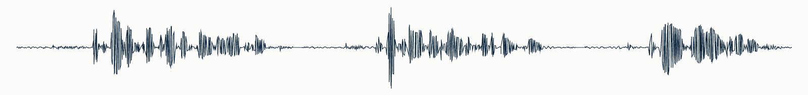

AI-generated demonstration
Donald Trump
“I’m Donald Trump. Welcome to Yuxuan’s academic exchange.”
CloneBlock-RT / Trustworthy speech generation
Through human perception.
Can a recording remain useful to people, while becoming a poor reference for voice cloning?
What voice cloning makes possible
TTS speaks new text. Voice conversion keeps an existing utterance’s content and changes who appears to be speaking. Both can use the vocal cues in a reference recording.
AI-generated demonstration
“I’m Donald Trump. Welcome to Yuxuan’s academic exchange.”

AI-generated demonstration
“Hello everyone. I’m Lei Jun. Welcome to Yuxuan’s academic exchange.”

AI-generated demonstration
“Hello! I’m Nailoong. Let’s learn how to protect our voices.”
These are synthetic imitations made for a research presentation, not authentic statements or endorsements. Original conditioning recordings are not distributed here. Voice likeness remains a listening judgment.
The accompanying talk covers Seed-VC v2, CosyVoice3, Qwen3-TTS, Chatterbox Turbo, VoxCPM2, Fish S2 and F5-TTS. This list records research coverage, not protection success across those models. The demonstrations above use a fixed Qwen3-TTS 1.7B Base checkpoint.
Trump reference source / DVIDS · Lei Jun reference source · Nailoong dataset / pengyichen / CC BY-NC-SA 4.0
The other side of convincing generation
Cloning can support consensual personalized speech. It can also support fraud and impersonation. These reports motivate the problem; they do not test or endorse our method.
A mother reported hearing what sounded like her daughter during a kidnapping hoax, then confirmed her daughter was safe. This is a reported suspected cloning incident, not a forensic identification of the system.
ABC News report / April 2023Watch the report
Hong Kong police described a roughly $25 million scam involving both synthetic visual and voice impersonation.
CNN report / February 2024
An AI-generated Biden impersonation told voters to skip the New Hampshire primary.
CBS report / January 2024Watch the reportThe images are publisher illustrations or news imagery, not recordings of the scams themselves. These reports motivate the work; they do not establish the effectiveness of the protection examples.
The question behind the research
The same protected recording must pass two different listening tests.
Identity remains recognizable, the message stays intact, and normal communication remains possible.
The unchanged cloner reads that same WAV. Its output should lose the original identity, while a matched clone from the original must first work.
Why we revisited the measurement
Speaker encoders such as ECAPA offer convenient numbers. In these selected reproductions, the scores and the developer listener’s identity judgments disagreed. Hear the original, the clean clone, then the protected clone.
ECAPA cosine, higher means more similar
0.772to0.291
Development judgment: both clones still sounded like the same speaker and remained usable.
ECAPA cosine, higher means more similar
0.555to0.292
Development judgment: the protected clone still sounded probably like the original speaker, with no use-limiting anomaly.
These examples show why a speaker score alone cannot establish protection. They do not show that either method always fails.
The numbers are ECAPA cosines to an independent enrollment prototype, not acceptance thresholds, success rates or all metrics reported by the original papers. This page does not claim SafeSpeech directly optimizes ECAPA. The two protected inputs themselves had audible noise, so these are not input-preservation successes. Listening judgments came from one development listener.
Within each group, the three playback files share one constant gain and PCM16 conversion, with no trimming or resampling. Enkidu’s early hidden different-speaker controls were detected in only 2/4 cases. The fixed official SafeSpeech checkpoint lacked emb_g.weight and retained seed-42 initialization; its reference was only 1.24 seconds. These reproduction limits remain part of the evidence.
From an external score to the condition used for generation
The model weights stay fixed. We optimize a bounded perturbation for each recording, save and reload a real WAV, and extract the model’s own reference condition. Matching that condition is still a search signal, not a substitute for listening to the output.
Modify the waveformx′ = x + δ
Read the native conditionCₘ(x′)
Approach another speaker’s conditionCₘ(d)
The other speaker d supplies a condition target; their voice is not mixed into x. Donor-directed matching has prior work. This is our experimental workflow, not a claim to have invented that idea, nor a trained universal real-time protector.
1 × 176,784
About 8.02 seconds at 22,050 Hz. x, δ and x′ have the same length.



An internal numerical summary
They form a native speaker condition used by the generator. Individual coordinates have no predefined labels such as age, nasality or timbre. Equal dimensions do not make the two models’ spaces the same.
Select a saved state to inspect the actual values. The 16×16 display only arranges 256 coordinates. It is not a spectrogram or a spatial feature map. Each model uses its own color scale.


These shapes describe the two frozen interfaces shown here. Other cloners may use several vectors, codec sequences or acoustic prompts.
From reading a vector to tracing the generation path / R1 study
A 256-value speaker vector is only one possible interface. Reference Mel features, speech codes, content representations and generation context can carry vocal cues too. We mapped the fixed implementations, then perturbed selected continuous output boundaries in the fixed inference path to see how the final output changed.
Our work: trace the actual path, build reproducible single-boundary interventions, and separate “the voice changed” from “the target identity was reduced.”
9mapped architectures
8models with probe data
376generation calls
327 / 328executed probes passed automatic gates
The target is p229; the identity reference and scoring anchor are different recordings. TTS uses fixed text. VC uses the same sentence spoken by p231. Same-seed clean repeats and zero-change controls must pass first.
Add random noise at 10% of the valid activation norm: two independent directions × both signs × two generation seeds, eight planned units per site. Keep weights fixed; never add floating-point noise directly to integer token IDs.
h′ = h + s · 0.10 · ‖hvalid‖F · u / ‖u‖F
ECAPA and Resemblyzer each produce D and A. We retain their disagreements rather than averaging them into a “human score.” Automatic engineering and ASR gates do not certify naturalness or human identity.
Interpret single-use conditions, repeated AR/ODE boundaries and reconstruction separately. The same 10% per call is not the same cumulative dose. Failed controls leave unknown results; we do not fill them with zero or replace the seed.
Embedding distance from the same-seed clean output. Larger means more change, with no failure direction.
D = 1 − cos(E(clean), E(probe))Positive: target similarity fell. Negative: it became more similar. This is still a machine-embedding judgment.
A = cos(E(clean), E(target)) − cos(E(probe), E(target))Connect each architecture to its measurements
Within the single-use condition group, reference Mel was the clearest consistent result: all eight probes reduced target similarity under both encoders.

Open the diagram to zoom. Codes such as A1, B3 and C5 match the result rows below. They identify selected output boundaries, not layer-by-layer weight attribution.
Boundary groups A/B/C and metric A are separate labels: A4 names a site; chart A measures the drop in target similarity.
A Single-use condition / contentB Repeated AR / ODEC Acoustic / waveform reconstruction

| Boundary | Eligible / planned | Injection calls / unit | D | A |
|---|
Seed-VC / A4
All 8/8 reference-Mel probes reduced target similarity under both encoders. Mean A: +0.060485 / +0.028704. This motivates studying the path; it does not establish human-perceived identity failure.
Qwen3-TTS / 48 probes
Of 48 probes: 28 became closer under both encoders, 7 farther under both, and 13 disagreed. Movement D cannot substitute for signed A.
Chatterbox Turbo / A3
All 8/8 reference-Mel probes disagreed on A’s direction. OpenVoice also had 24/48 disagreements across its probes. This is why we retain both readouts and still need listening tests.
This is an internal sensitivity study with one speaker, one sentence and one strength, without listening or MOS evaluation. It is neither a contribution percentage nor evidence of waveform protection. FreeVC remains unknown; one seed’s probes in each of VoxCPM2 and Fish were blocked by control failures.
The next question is reachability: can a real recording that people still accept move these effective paths? An internal intervention does not guarantee an acceptable waveform can reach it.
From module diagnosis to the protection problem
Internal probes nominate paths worth studying. We then edit only the reference recording: search for δ that makes the native model produce an effective condition change and shifts the clone away from the target identity, while preserving the input’s identity, message and everyday use.
Next research framework · not a protection result from R1What can the reference actually change?
Cref(x) may contain a speaker vector, Mel features, speech codes and their lengths, masks or level information. They must come from the same real WAV. Target text, another person’s source speech and generation randomness are kept separate and matched. A sensitive internal tensor is not automatically an editable C(x).
Cref(x) = {style vector, reference codes, reference Mel}Reference Mel A4 is a candidate path. The same recording also determines style and reference-code conditions.
Source content stays fixed. Generated Mel is a downstream result, not a freely editable reference input.
Only editable input
x′ = x + δSave and reload a real WAV. It must still sound like the person, keep the message and remain usable.
Native reference frontend
Cref,m(x′)Re-extract every reference condition. Inspect the candidate path without injecting a replacement vector.
Complete VC / TTS
Weights stay fixedGm(Cref, u, ω)u: fixed text or source speech. ω: matched seed and generation settings.
Matched comparison
y₀ ↔ yδRun the same pipeline with x and x′. Require a valid clean clone, then test the protected clone’s identity.
Feedback returns to the audio. Conditions and automatic scores propose directions; real generation and listening test the claim.
Update δ · keep Gm fixedNominate a path, then check its effect through full generation. A sensitive internal tensor is not necessarily reachable through a normal WAV.
These are explanation steps, not optimization iterations or measured success rates.
A directional, constrained objective
yδ = Gm(Cref,m(x + δ), u, ω)
maxδ Ffailure(yδ, r)
subject to: x + δ ∈ Ax; valid clean clone
r is an independent target recording. Ax denotes acceptable inputs with identity, content and use preserved. Larger Ffailure means stronger human-judged identity failure. It defines the goal, not an already solved differentiable loss. Engineering limits and machine scores only assist the search.
① Input x′: still the person, correct message, normal communication.
② Clean clone y₀: already sounds like the person, conveys the correct message and is usable. An invalid baseline cannot count as protection.
③ Protected clone yδ: a real loss of target identity. Severe quality or key-content failures can be tested as separate branches.
A larger condition distance or movement D does not automatically mean stronger protection: it may change style or even increase target similarity. An internal change need not have an acceptable WAV counterpart. Unheard candidates remain unknown; repetition and transfer use a frozen WAV only after source-model success.
δ can be updated sample by sample or combined from a small set of structured directions. The next example is the six-knob representation explored in v46: a way to reduce search freedom, not evidence that every part of this framework has been achieved.
A historical search representation / v46
Split two earlier perturbations into low, mid and high frequency parts. This gives six full-length directions. The matrix B has N rows and six columns, one direction per column. Six weights combine them into a perturbation before the real waveform constraints are applied.
This is the v46 search representation, not the algorithm that produced the v41 OpenVoice examples below. Earlier single-model searches also cost compute; fewer adjustable values do not prove lower total cost.
The controls only change a visual linear mixture of saved directions. They do not create new protected audio, run the actual projection, or predict perception. Real searches still require WAV reloading, full generation and listening.
The complete chain, in actual audio
These are two earlier OpenVoice waveform pilots, separate from the R1 internal module study above. One non-blind developer listener judged the protected inputs same-speaker and usable, and the protected clones clearly different while still natural. Listen left to right within each example.
Learn this person’s voice.
Same person. Still usable.
Still resembles the original.
Natural speech. A different voice.
Learn this person’s voice.
Same person. Still usable.
Still resembles the original.
Natural speech. A different voice.
The two clones in each example say the same sentence: “The main concern is that it could interfere with air traffic.” Original and cloned content differ; compare identity rather than matching words. Only one clip plays at a time.
| Judgment | p257 / ref 1 | p264 / ref 0 |
|---|---|---|
| Protected input identity / use | 5 / 5 | 5 / 5 |
| Clean clone identity | 4 | 5 |
| Protected clone identity / quality | 1 / 5 | 1 / 5 |
| Protected input and output content | Correct | Correct |
These v41 examples used per-recording native-condition matching: 64-step full-waveform Adam with energy regularization and condition-distance selection. They are not successes of the v46 six-knob method or the earlier streaming GRU. Two of four prelisted units completed; two stopped at numerical checks. Showing the two completed cases is not a general 2/2 success rate.
Playback uses full PCM16 copies with gain 1 and each original sample rate and sample count retained. Historical ratings bind the unchanged floating-point WAVs. An input rating of 5 means same-speaker and usable, not ABX indistinguishability. This demonstration does not replace independent multi-listener validation or establish model transfer.
The evidence boundary
This page presents selected developmental evidence. It does not establish protection for every voice, inaudible changes, or one WAV that protects against every cloner.
Later Qwen trials retained an output identity effect, but repeated listening found audible input noise. Strict joint success remained unconfirmed.
Explore the work
This page follows the academic talk’s narrative. The earlier streaming paper remains available separately; its architecture, training and numerical results do not validate the per-recording examples above.